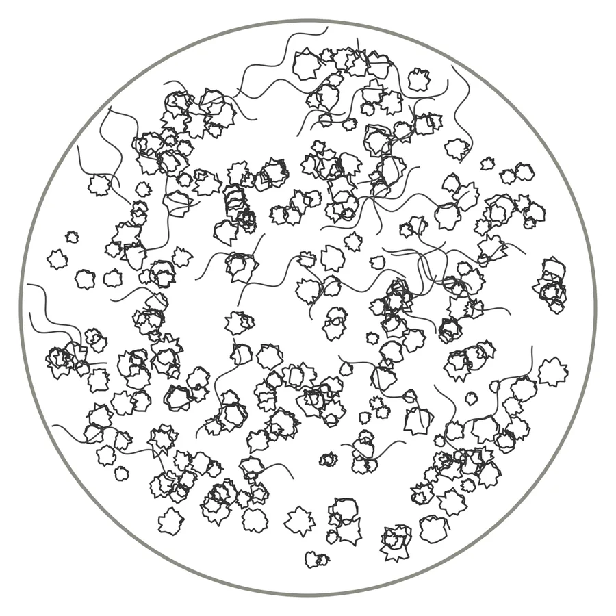
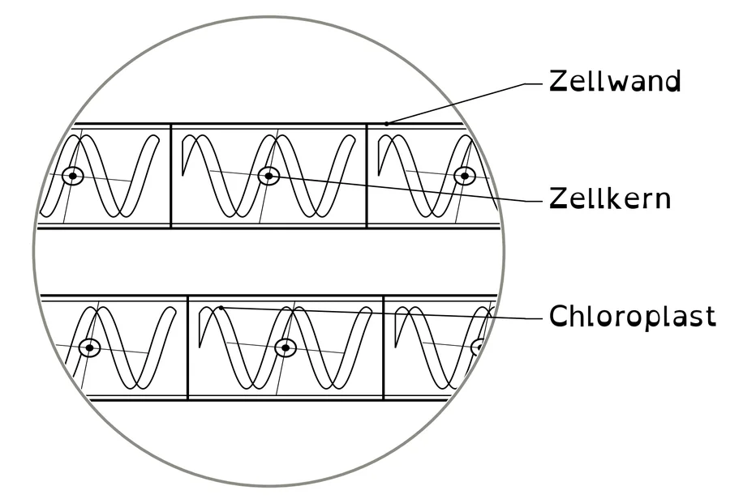
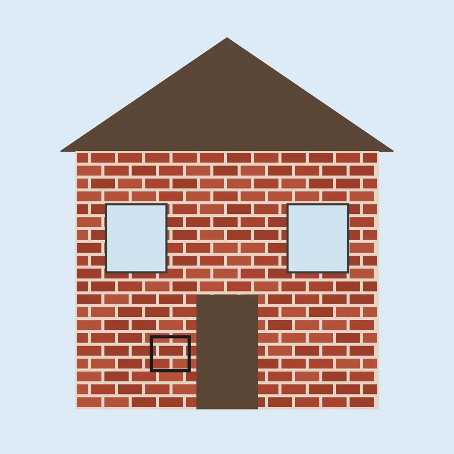
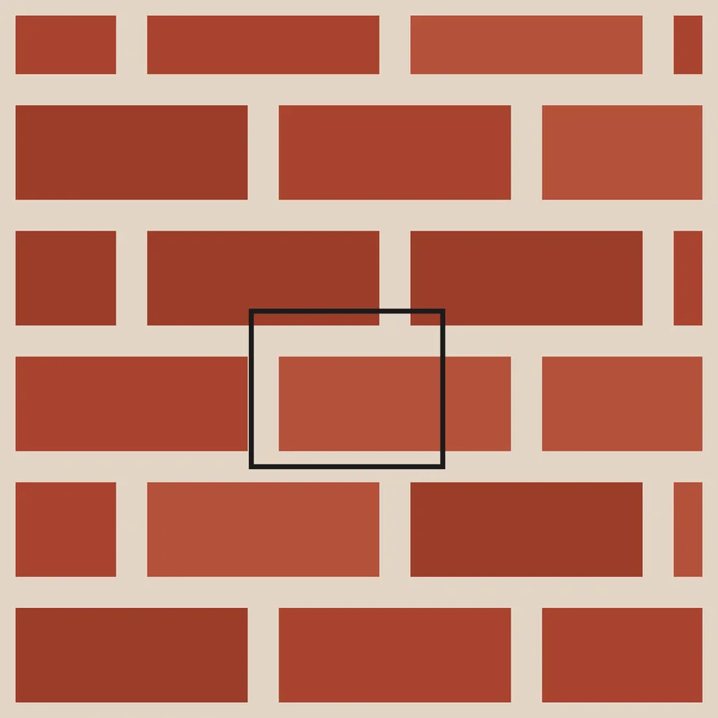
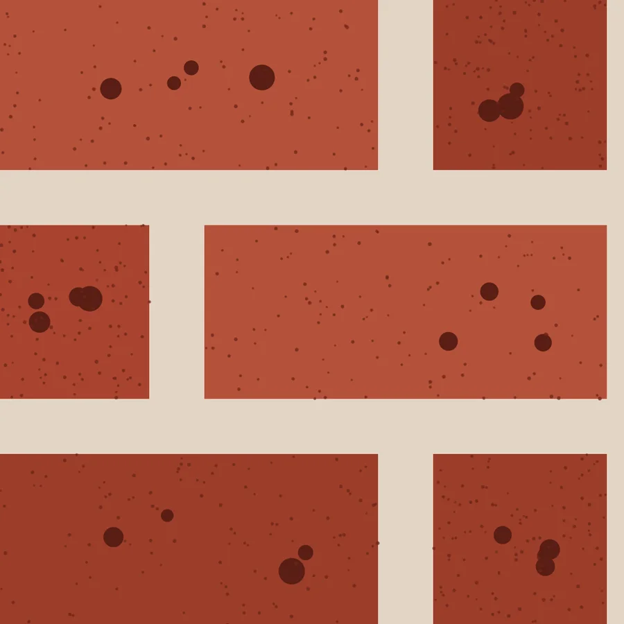
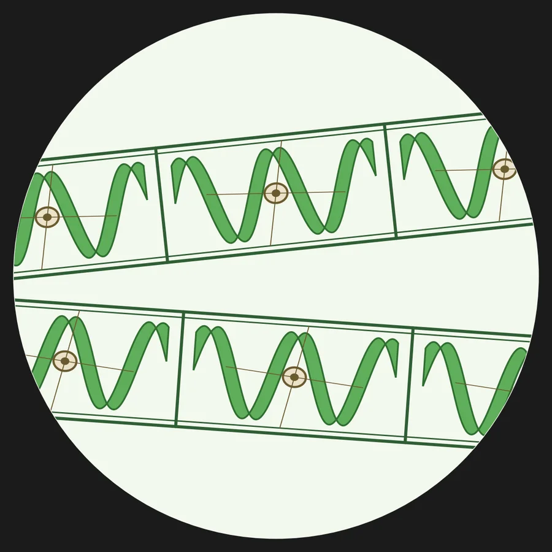
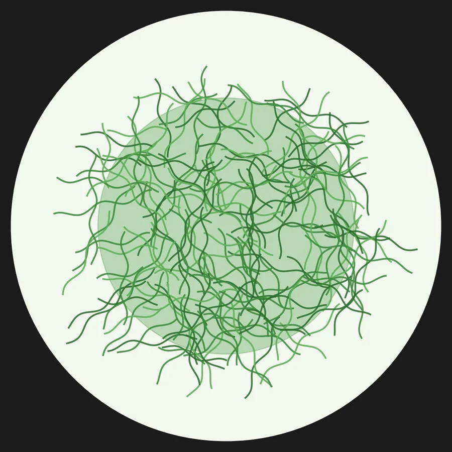
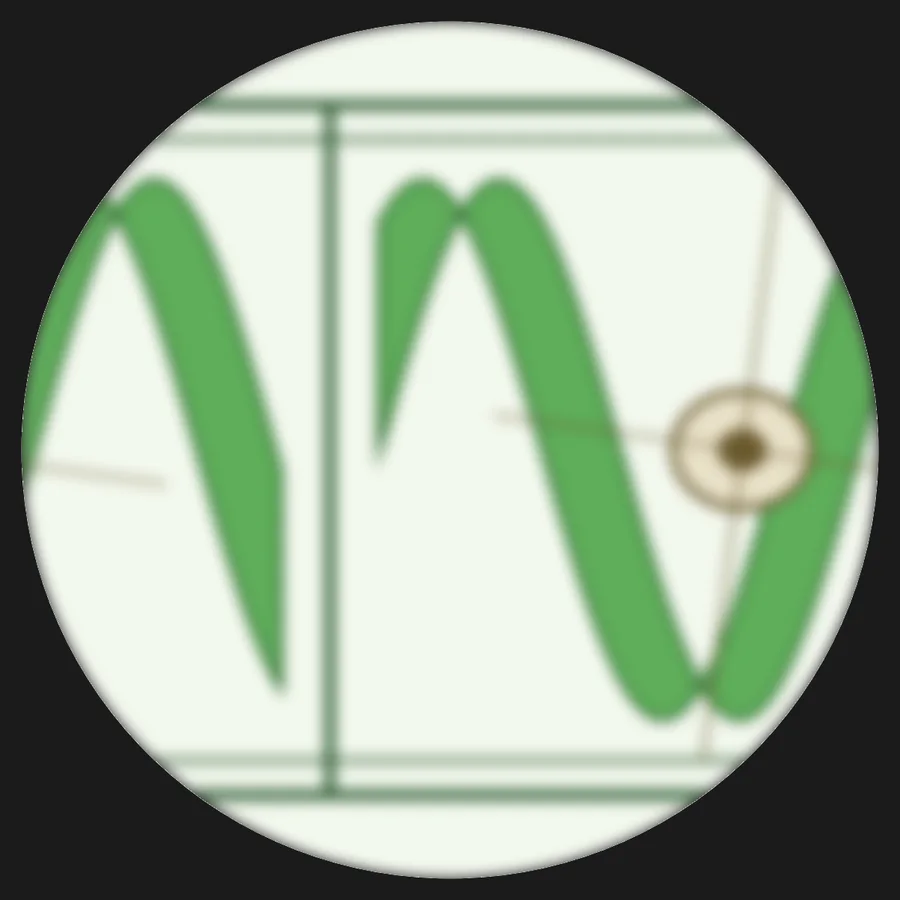
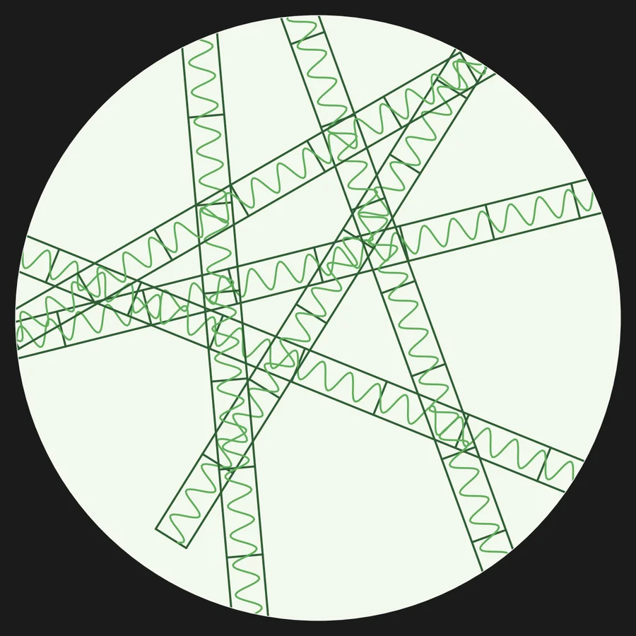
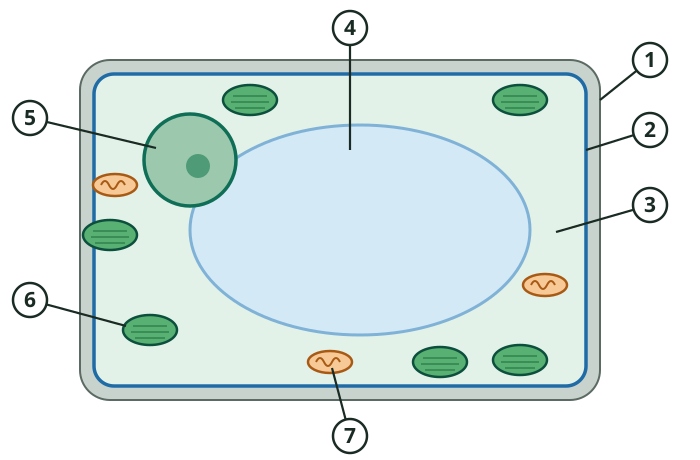

Einstieg · Do Now


„Zeichnet nur, was ihr wirklich seht.“
Beide haben sich daran gehalten.
aVergleiche Zeichnung A und Zeichnung B.
bBeschreibe zwei Unterschiede. Schreibe in dein Heft.
Einstieg · Unsere Frage
Erarbeitung I · Kurzinput



Beschreibe, was sich beim Zoomen verändert: Wie groß ist der Ausschnitt? Wie viele Einzelheiten siehst du?
Achtung: mal rechnen, nicht plus!
Erarbeitung I · Kurzinput
Stelle das Zwiebelhäutchen scharf. Beginne mit dem kleinsten Objektiv. Beschreibe, wie sich das Bild bei stärkerer Vergrößerung verändert.
Erarbeitung I · Anwenden




AOrdne die Bilder W, X, Y und Z. Beginne mit der schwächsten Vergrößerung.
Alle Bilder zeigen die Schraubenalge (Spirogyra). Bilder der Reihe nach antippen.
Sicherung · Merksatz
Zellwand, Zellkern, Chloroplast – das haben wir bei der Alge erkannt.
Erarbeitung II · Die Pflanzenzelle

1aTrage in die Tabelle die Bezeichnungen für die Bestandteile der Pflanzenzelle ein.D
| Nr. | Zellbestandteil |
|---|---|
| 1 | |
| 2 | |
| 3 | |
| 4 | |
| 5 | |
| 6 | |
| 7 |
Erarbeitung II · So arbeitest du
Du bekommst das AB mit Starthilfe: Zwei Felder sind schon ausgefüllt.
Nutze den Wortspeicher und die Funktionskarten M2.
Beginne mit den Bestandteilen, die du von der Alge kennst.
Du bekommst das AB ohne Starthilfe.
Nutze den Wortspeicher.
Nutze die Funktionskarten M2 erst, wenn du bei Aufgabe b nicht weiterkommst.
Du bekommst das AB ohne Starthilfe.
Aufgabe b ohne M2: Nutze dein Biologiebuch. M2 nur zur Kontrolle.
Zusatz: Erkläre, warum man bei der Alge (Bild W) nicht alle sieben Bestandteile erkennen kann.
Erarbeitung II · Hilfe
Hier wird mit Licht Traubenzucker hergestellt (Fotosynthese). Enthält den grünen Farbstoff.
Gibt der Zelle ihre feste Form und schützt sie.
Gewinnt Energie aus Traubenzucker für die Zelle. „Kraftwerk der Zelle“.
Flüssigkeit, die die Zelle ausfüllt. Hier laufen viele Vorgänge der Zelle ab.
Enthält die Erbsubstanz und steuert die Prozesse in der Zelle.
Dünne Haut um das Zellplasma. Bestimmt, welche Stoffe hinein- und hinausgelangen.
Großer Speicher für Wasser und gelöste Stoffe. Drückt von innen und macht die Zelle fest.
Sicherung · Vergleich
Tippe ein Teil an
Tippe in der Zeichnung auf einen Zellbestandteil. Dann erscheint seine Aufgabe.
0 von 7 entdeckt
Vergleiche mit deiner Lösung aus dem Arbeitsblatt.
Reflexion · Blitzlicht
Nenne einen Zellbestandteil und seine Aufgabe – ohne auf dein Arbeitsblatt zu schauen.
Die Do Now in der nächsten Stunde fragt die sieben Bestandteile der Pflanzenzelle ab.
Reflexion · Selbsteinschätzung
Tippe an, wie sicher du dich fühlst. Das ist nur für dich.